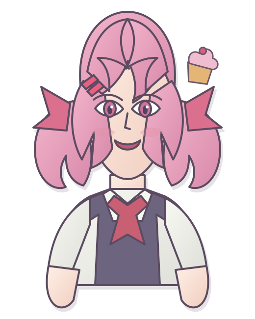

C:\USERS\NESI56\PORTFOLIO
Hi, I’m nesi56.
I build software, experiments, and interfaces that feel a little more alive than they need to.
i
system message
No résumé buzzwords found. Curiosity is running normally.
--public repos
HTMLno framework
98.56calmOS build
♥
♥

Natsuki
I sorted your projects by cuteness, usefulness, and how many bugs they survived.
C:\USERS\NESI56\REPOSITORIES
Latest projects
pacman -Qe | grep creativity
Tools & systems
△
skills.tree
nesi56/
├── web/
│ ├── HTML
│ ├── CSS
│ ├── JavaScript
│ └── responsive design
├── systems/
│ ├── Arch Linux
│ ├── shell scripting
│ └── low-level curiosity
├── creative/
│ ├── interface design
│ ├── visual experiments
│ └── pixel art
└── currently-learning/
└── things that look impossible
process monitor
shipping ideas94%
debugging calmly82%
reading the docs88%
naming variables67%
ring-0 thought:
A small program can still hold a huge idea.
/dev/ttyN56
Interactive terminal
nesi56 shell [version 98.56]
Type help and press Enter.
Try: help, about, projects, neofetch, poem, clear
♡
README.TXT
Thanks for stopping by.
This is a public GitHub portfolio for nesi56. It intentionally contains no private personal information.
“The computer is a canvas, even when the canvas has beveled gray buttons.”
Unofficial fan-made design. Natsuki and Doki Doki Literature Club are associated with Team Salvato. This site is not affiliated with or endorsed by them.
github.com/nesi56 ↗